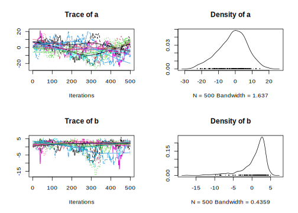
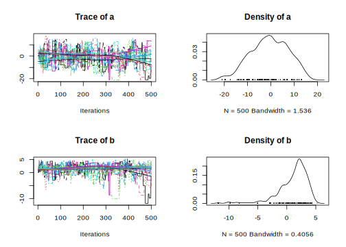

This R package provides ensemble samplers for affine-invariant Monte Carlo Markov Chain, which allow a faster convergence for badly scaled estimation problems. Two samplers are proposed: the ‘differential.evolution’ sampler from ter Braak and Vrugt (2008) and the ‘stretch’ sampler from Goodman and Weare (2010).
For theoretical background about Ensemble MCMC (what are the benefits over simple MCMC? How do they work? What are the pitfalls?), please refer for example to this lecture from Eric B. Ford (Penn State).
Installation
You can install the stable version of this package from CRAN:
install.packages("mcmcensemble")or the development version from GitHub, via my r-universe:
install.packages("mcmcensemble", repos = "https://bisaloo.r-universe.dev")Usage
library(mcmcensemble)
## a log-pdf to sample from
p.log <- function(x) {
B <- 0.03 # controls 'bananacity'
-x[1]^2 / 200 - 1/2 * (x[2] + B * x[1]^2 - 100 * B)^2
}
## set options and starting point
n_walkers <- 10
unif_inits <- data.frame(
"a" = runif(n_walkers, 0, 1),
"b" = runif(n_walkers, 0, 1)
)
## use stretch move
res1 <- MCMCEnsemble(p.log, inits = unif_inits,
max.iter = 5000, n.walkers = n_walkers,
method = "stretch")
#> Using stretch move with 10 walkers.
attr(res1, "ensemble.sampler")
#> [1] "stretch"
str(res1)
#> List of 2
#> $ samples: num [1:10, 1:500, 1:2] 0.42619 0.45413 0.00133 0.59391 0.35217 ...
#> ..- attr(*, "dimnames")=List of 3
#> .. ..$ : chr [1:10] "walker_1" "walker_2" "walker_3" "walker_4" ...
#> .. ..$ : chr [1:500] "generation_1" "generation_2" "generation_3" "generation_4" ...
#> .. ..$ : chr [1:2] "para_1" "para_2"
#> $ log.p : num [1:10, 1:500] -2.8 -3.91 -2.68 -2.93 -2.25 ...
#> ..- attr(*, "dimnames")=List of 2
#> .. ..$ : chr [1:10] "walker_1" "walker_2" "walker_3" "walker_4" ...
#> .. ..$ : chr [1:500] "generation_1" "generation_2" "generation_3" "generation_4" ...
#> - attr(*, "ensemble.sampler")= chr "stretch"If the coda package is installed, you can then use the coda = TRUE argument to get objects of class mcmc.list. The coda package then allows you to call summary() and plot() to get informative and nicely formatted results and plots:
## use stretch move, return samples as 'coda' object
res2 <- MCMCEnsemble(p.log, inits = unif_inits,
max.iter = 5000, n.walkers = n_walkers,
method = "stretch", coda = TRUE)
#> Using stretch move with 10 walkers.
attr(res2, "ensemble.sampler")
#> [1] "stretch"
summary(res2$samples)
#>
#> Iterations = 1:500
#> Thinning interval = 1
#> Number of chains = 10
#> Sample size per chain = 500
#>
#> 1. Empirical mean and standard deviation for each variable,
#> plus standard error of the mean:
#>
#> Mean SD Naive SE Time-series SE
#> para_1 -1.9746 8.892 0.12575 1.1049
#> para_2 0.3599 3.229 0.04566 0.4147
#>
#> 2. Quantiles for each variable:
#>
#> 2.5% 25% 50% 75% 97.5%
#> para_1 -19.563 -8.1257 -1.429 4.862 13.448
#> para_2 -8.809 -0.7837 1.199 2.519 4.225
plot(res2$samples)
## use different evolution move, return samples as 'coda' object
res3 <- MCMCEnsemble(p.log, inits = unif_inits,
max.iter = 5000, n.walkers = n_walkers,
method = "differential.evolution", coda = TRUE)
#> Using differential.evolution move with 10 walkers.
attr(res3, "ensemble.sampler")
#> [1] "differential.evolution"
summary(res3$samples)
#>
#> Iterations = 1:500
#> Thinning interval = 1
#> Number of chains = 10
#> Sample size per chain = 500
#>
#> 1. Empirical mean and standard deviation for each variable,
#> plus standard error of the mean:
#>
#> Mean SD Naive SE Time-series SE
#> para_1 -0.7293 9.675 0.13683 0.9148
#> para_2 0.1894 4.103 0.05802 0.4690
#>
#> 2. Quantiles for each variable:
#>
#> 2.5% 25% 50% 75% 97.5%
#> para_1 -23.87 -6.4298 -0.2157 6.038 16.33
#> para_2 -13.53 -0.8687 1.6170 2.583 4.22
plot(res3$samples)
Progress bar
You can choose to enable a progress bar thanks to the progressr package. This can be done by adding the following line to your script before running MCMCEnsemble():
Parallel processing
This package is set up to allow transparent parallel processing when requested by the user thanks to the framework provided by the future package. To enable parallel processing, you must run:
future::plan("multiprocess")at the start of your session.
Similar projects
The Goodman-Weare ‘stretch’ sampler is also available in the tonic R package.
The methods used in this package also have (independent) implementations in other languages:
References
Goodman, Jonathan, and Jonathan Weare. 2010. “Ensemble Samplers with Affine Invariance.” Communications in Applied Mathematics and Computational Science 5 (1): 65–80. https://doi.org/10.2140/camcos.2010.5.65.
ter Braak, Cajo J. F., and Jasper A. Vrugt. 2008. “Differential Evolution Markov Chain with Snooker Updater and Fewer Chains.” Statistics and Computing 18 (4): 435–46. https://doi.org/10.1007/s11222-008-9104-9.